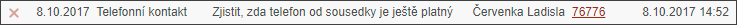
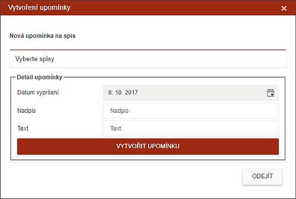
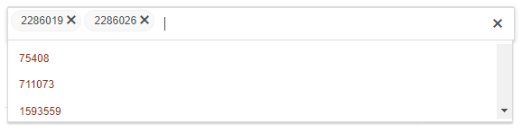

Připomínka ke spisu
Jedná se o připomenutí, které není nikde uloženo v historii spisu a které plně ovládá uživatel. Znamená to, že tuto poznámku u spisu je možné kdykoliv zrušit křížkem v záložce Upozornění, kde se nachází hromadná správa všech Upozornění, Urgencí a Zpráv.

Při založení Připomínky uživatel nastavuje datum a čas upozornění a vkládá vysvětlující text.

Uživatel tuto funkci může použít:
Čísla vybraných spisů budou vypsána v dialogovém okně jako spisy, ke kterým se zapíše pořizovaná připomínka. Kliknutím na dialogové okno s vypsanými spisy se otevře seznam všech čísel spisů dané záložky a tyto lze kliknutím přidat.

Odebrat vybraný spis lze pomocí křížku vedle čísla spisu.
Hromadná správa Připomínek je na záložce REMINDER.